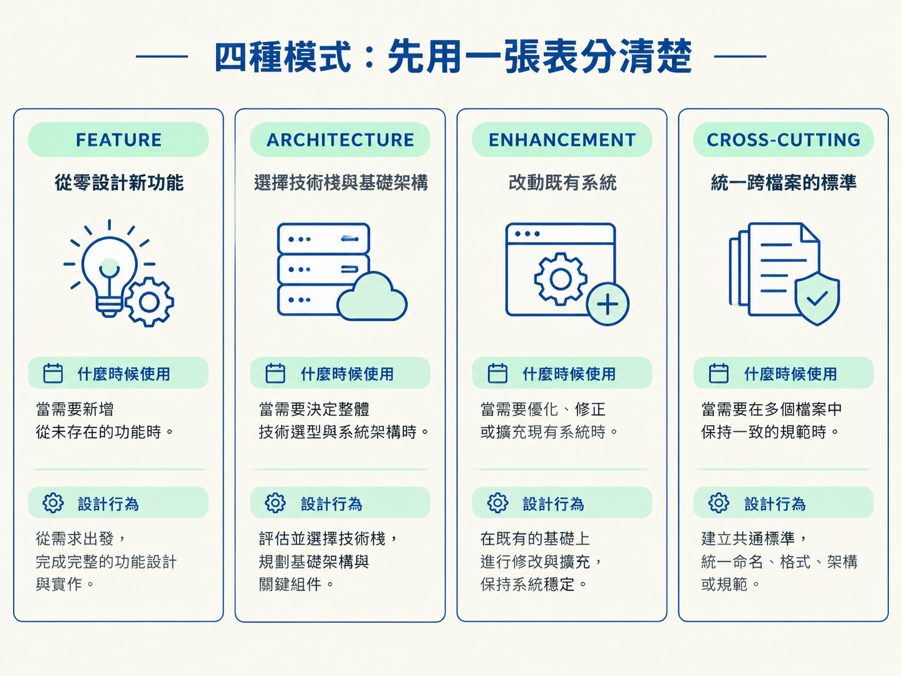
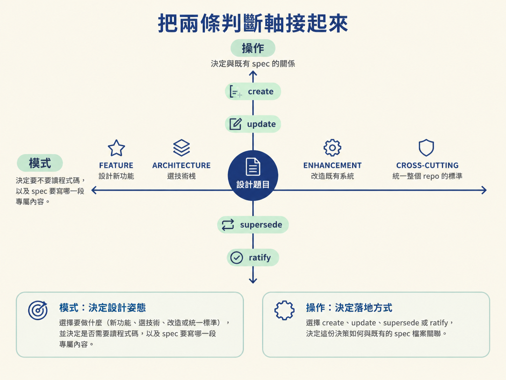
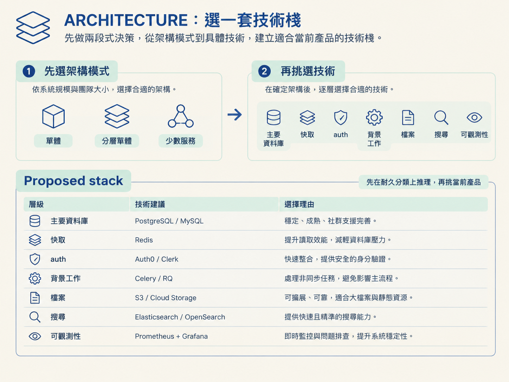
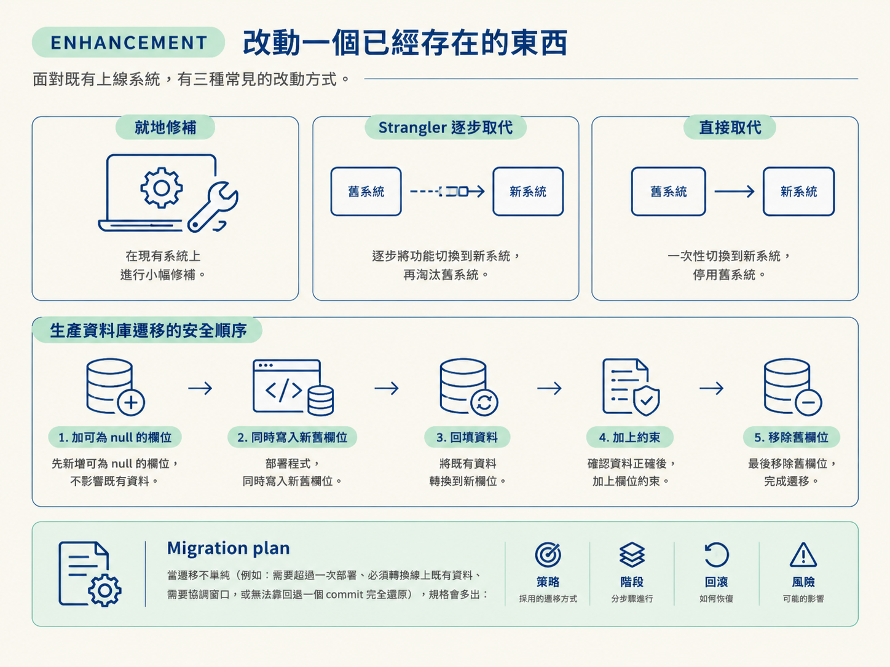
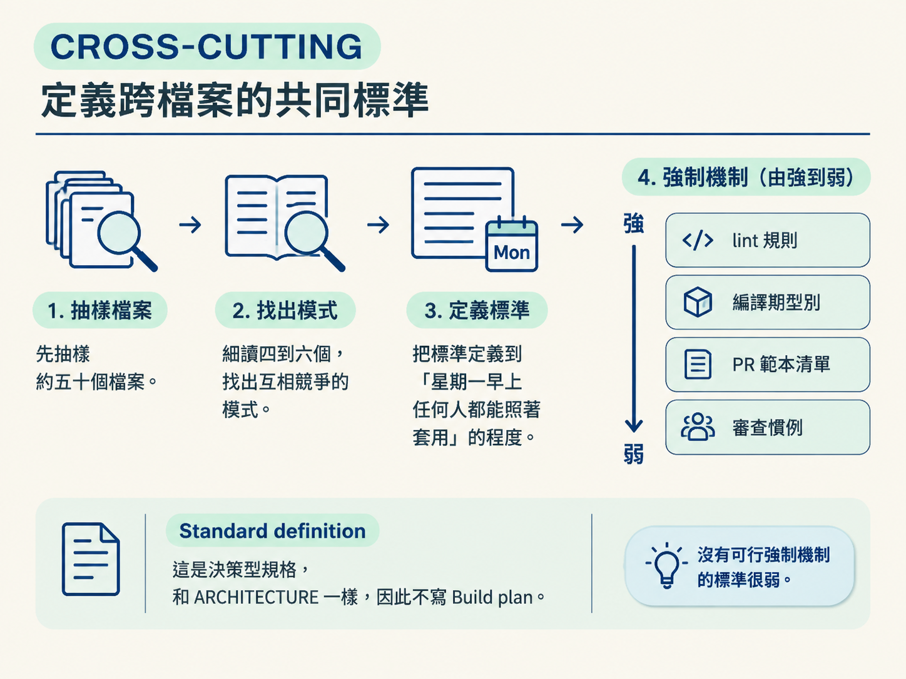

學完這一節，你應該能依照情境選出 FEATURE、ARCHITECTURE、ENHANCEMENT 或 CROSS-CUTTING，並說明每種模式會多產出哪個設計段，以及它套用了哪些專家預設。
上一節我們看過規格的共同骨架。但骨架只是起點，因為不同的設計對象，真正需要回答的問題並不一樣。
例如，「設計團隊邀請功能」和「幫我挑新專案的技術棧」表面上都像是在做設計，實際上卻是兩種完全不同的工作。前者要釐清資料模型、邀請流程與權限；後者要比較系統規模、團隊能力，以及每一層該採用哪一類技術。
如果 /architect 用同一份問卷處理兩者，設計功能時可能被拖去回答一堆無關的部署問題；挑技術棧時，則可能被要求先寫驗收條件。問題不是問得不夠多，而是問錯了方向。
因此，/architect 會先判斷模式，再依模式決定訪談內容、設計重點與最後的規格段落。這一節就來看四種模式，以及負責寫規格的那個角色，背後採用什麼立場。
這個角色被設定成一位有十五年經驗的 Staff Engineer 兼 Principal Architect：管理過服務數百萬使用者的系統，也曾在半夜三點被自己做過的架構決定叫醒，更看過同一批失敗模式在不同公司一再重演。
所以它不會端出一張看似中立的技術菜單，讓你自己從十個選項裡猜答案。它會給出明確方向、坦白說明取捨；如果某個方向明顯會撞上已知的失敗模式，也會直接指出來。
它的幾項思考原則會反覆出現在四種模式中：
它也明確列出幾件不會做的事：不給沒有清楚推薦的選項、不因為某項技術流行就推薦它、不為使用者從未提過的想像規模設計、不忽略團隊實際能達成的能力，也不會只說「這要看情況」卻不說明究竟要看什麼。
正式進入模式前，它會先檢查題目本身：
如果發現問題，它會在 ## Context 開頭加入 ⚠️ Premise note。這段內容會說明目前擔心什麼、可能導致哪種失敗，以及比較正確的框架應該長什麼樣子。接著它仍會依照原本的方向繼續工作。你可以否決這個挑戰，但它必須先把風險說清楚。
它同時會檢查三件事：
下面這張表列出它會對照的已知失敗模式。只要出現相應信號，它就會直接點名。
| 失敗模式 | 信號 | 它會說什麼 |
|---|---|---|
| 過早微服務 | 不到十人的團隊想拆微服務 | 微服務要多花三倍工程時間建置與維運。先用結構良好的單體，等真正的瓶頸出現再拆。 |
| 拿 NoSQL 存關聯資料 | 資料有明顯關聯，卻提議使用文件或鍵值資料庫 | 這個領域有清楚的關聯結構，使用關聯式資料庫搭配 ACID、join 與約束更合適。 |
| 大爆炸重寫 | 想一次取代已經上線的系統 | 生產系統的大爆炸重寫失敗多於成功。應使用 strangler：新舊並行、逐步遷移，證明可行後才讓舊系統退場。 |
| 過早最佳化 | 還沒量到問題，就想加入快取、佇列或 CDN | 尚未量測到的效能問題，先做 profiling，再針對實際量到的瓶頸增加基礎設施。 |
| 預設 GraphQL | 標準 CRUD API 也想採用 GraphQL | GraphQL 適合需要彈性查詢的多樣客戶端；標準 CRUD 使用 REST，可以省下 schema 維護與 N+1 風險。 |
| 拿 serverless 跑有狀態工作 | 把長時間或帶狀態的流程放進 serverless | serverless 有冷啟動、十五分鐘上限與連線限制。有狀態或長時間工作應放在容器或 VM。 |
| 自己重造 auth | 想從零手刻身分驗證 | JWT 到期、refresh token 輪替、CSRF 與 session fixation 都可能成為破口，應使用成熟方案。 |
| 組織隔離當事後補丁 | B2B SaaS 沒有先設計 org 隔離 | org 隔離是承重結構。上線後才加入 org_id，代表要重寫每個查詢、政策與索引，第一天就要設計好。 |
| 模式 | 什麼時候使用 | 設計行為 |
|---|---|---|
FEATURE | 從零設計一個新功能，不論是否已有部分程式碼 | 以第一原理設計、套用最佳實務，只閱讀必要的程式碼 |
ARCHITECTURE | 為新專案選擇技術棧或基礎架構 | 完整評估技術棧與業界模式，不閱讀程式碼 |
ENHANCEMENT | 改善、取代或擴充已經存在的東西 | 閱讀既有程式碼與規格，進行聚焦的選項比較 |
CROSS-CUTTING | 把某個模式統一到整個程式庫，例如錯誤處理、日誌、auth 或命名 | 抽樣檢查現況、精確定義標準，並提出強制機制 |
接下來逐一看每種模式多做了什麼。

FEATURE 面對的是從零開始的功能，因此採用第一原理。不會把整個程式庫讀完，而是只閱讀這個功能必須整合的既有部分。
它會依序釐清七個維度，一個都不跳過：
它也會套用一批專家預設。這些不是為了讓規格看起來更完整，而是把常見的坑提前填掉：
archived_at 時間戳或封存表。最後，這些內容會收進 ## Feature design，包含資料模型草圖、狀態轉移、API 介面、值來源、關鍵不變條件、安全模型、設定，以及關鍵測試情境。
其中「值來源」表格很容易被忽略，卻是關鍵設計之一。每個動作要產生、計算或顯示的值，都必須寫清楚它從哪裡來。如果某個驗收條件需要一個值，但規格中沒有任何來源，那就代表這個輸入尚未決定。它必須在現在解決，不能留給建置的人自行發明。

ARCHITECTURE 面對的是新專案的技術棧或基礎架構決策。它有一個非常重要的順序：先選架構模式，再選技術。
架構模式主要由系統規模與團隊大小決定：
controller → service → repository。選好架構模式後，才逐層挑技術。這裡有一個值得記住的方法：先在耐久的分類上推理，再挑當前的產品。
技術產品汰換得很快，因此規格應先定義類別與背後的機制，而不是把某個當下流行的產品寫死。這些耐久分類包括：
這個模式套用的專家意見，也延續相同的保守邏輯：
ARCHITECTURE 是決策型規格，因此不寫 Build plan。它產出的是 ## Proposed stack：一張逐層列出的技術棧表，而且每一層都必須附上一句理由。

ENHANCEMENT 面對的是已經上線、正在運作的系統。第一步是閱讀既有程式碼與相關規格；第二步則是做出誠實診斷：
它固定比較三個選項：
這裡的專家意見再次圍繞「不要衝動重寫」：
如果遷移不單純，例如需要超過一次部署、必須轉換線上既有資料、需要協調窗口，或無法靠回退一個 commit 完全還原，規格會多出 ## Migration plan，交代遷移策略、階段、回滾方式與風險。

CROSS-CUTTING 處理的不是壞掉的系統，也不是技術棧選擇，而是結束不一致：把整個程式庫裡處理同一件事的不同做法，收斂成一個明確、可以強制執行的標準。
它的第一步是抽樣，不是全面審查。它會先列出大約五十個原始檔，再細讀其中四到六個能代表目前不一致狀況的檔案。目標是先找出兩到三種互相競爭的模式，再確認這些模式並存時造成的損害，例如：
接著，它會把標準定義到「星期一早上，任何人都能照著套用」的程度，至少包含五件事：
強制機制會依照效果排序，從強到弱如下：
lint 規則或外掛（最好，自動化，CI 會擋）> 編譯期型別或抽象基底類別（好，編譯時就攔）> PR 範本清單（弱，依賴人）> 審查慣例（最弱，沒有自動化）。
這裡有一個很實際的判斷：沒有可行強制機制的標準很弱。它最後通常只會變成一句大家都同意、卻沒有人穩定遵守的口號。
CROSS-CUTTING 的選項不是某項技術，而是強制層級與推行策略的組合：
它的設計段是 ## Standard definition。和 ARCHITECTURE 一樣，這是決策型規格，因此不寫 Build plan。

模式不是靠一長串問題問出來的，而是根據題目，以及「這個東西在程式碼裡是否已經存在」推斷出來。只有真的模稜兩可時，才會向你確認。
FEATURE。ARCHITECTURE。ENHANCEMENT。CROSS-CUTTING。還有一個重要的防呆檢查：如果推斷出 ENHANCEMENT，卻在程式庫裡找不到任何原始檔，/architect 會先停下來確認：程式碼是在其他目錄，還是其實根本尚未實作？
如果是後者，題目就不該使用 ENHANCEMENT，而應改成 FEATURE 或 ARCHITECTURE。這個檢查可以擋掉一種常見錯位：用「修改既有系統」的問法，去設計一個其實全新的東西。
/architect背後是一位 Staff Engineer 兼 Principal Architect：簡單勝過聰明、無聊技術是優點、為失敗設計、用三個時間尺度思考，並把維運現實當成必要條件。動筆前，它會先挑戰題目的前提，再對照八個已知失敗模式。四種模式各自負責不同工作：
FEATURE以第一原理走過七個維度，套用功能設計的專家預設，產出## Feature design；ARCHITECTURE先選架構模式，再逐層挑技術，在耐久的技術分類上推理並選擇當前產品，產出## Proposed stack；ENHANCEMENT閱讀既有系統並做誠實診斷，固定比較就地修補、strangler 與直接取代，遷移不單純時再加入## Migration plan；CROSS-CUTTING抽樣現況、精確定義標準，並依照 lint > 型別 > PR 清單 > 審查慣例排列強制機制，產出## Standard definition。
模式選定後，真正的重頭戲才開始：一場「一次只做一個決定」的訪談。下一節會看 staged design conversation 如何從 scope 驗證開始，走過六個階段，最後通過完整性關卡後才動筆。